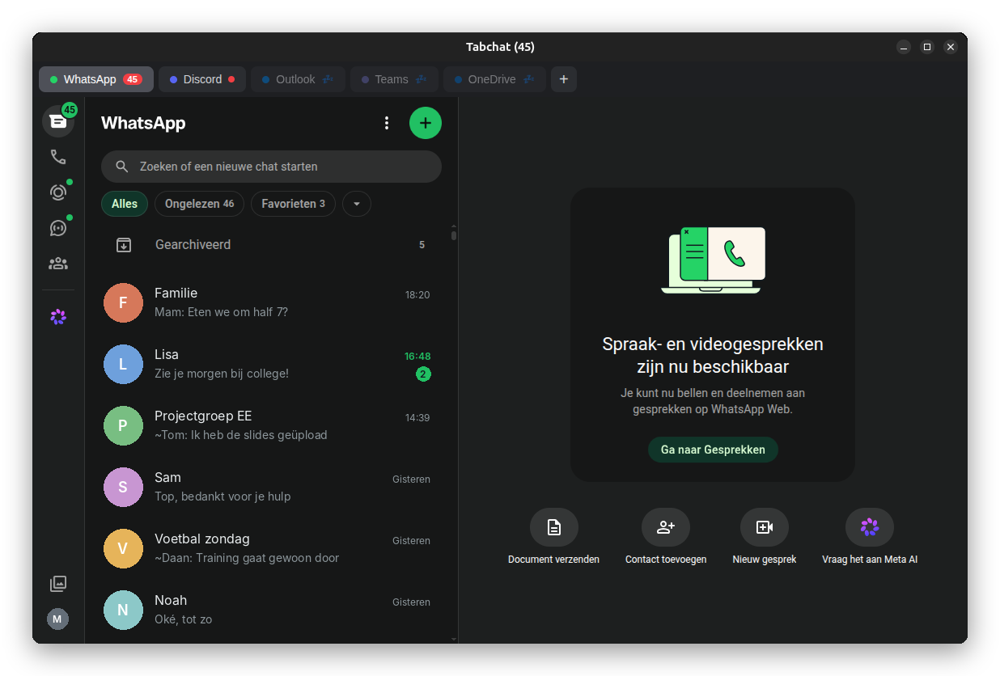

Your chat apps, in one window.
Tabchat puts WhatsApp, Discord, Microsoft Teams, Outlook and OneDrive side by side in tabs. Light on memory, keyboard-friendly and built for Linux.

Unread counters on every tab, so you see at a glance where something new is waiting.
Everything the web versions are missing.
Tabchat shows the official web versions of your apps, and adds what you expect from a real desktop app.
Never miss a message
- Unread counters on tabs, the tray icon and the dock
- Keeps running in the background when you close the window
- Click a notification to jump straight to that chat
- Starts hidden when you log in, if you want
Made for school and work
- One shared Microsoft sign-in for Teams, Outlook and OneDrive
- Stays signed in after a restart, also with school accounts
- Several accounts of the same service, side by side
- Screen sharing in Discord and Teams
Quiet when you need it
- Do not disturb for an hour, until tomorrow or until you turn it off
- Follows Ubuntu's own Do not disturb
- Tabs you don't use go to sleep and free up memory
- Light and dark theme that follows your system
Fast with the keyboard.
Press Ctrl+K to jump to any tab or action. Switch tabs with Alt+1–9 or Ctrl+Tab, close one with Ctrl+W and bring it back with Ctrl+Shift+T, just like in your browser.
Everything else is one click away in the tray menu, right next to your clock.

Your chats stay yours.
Tabchat collects nothing: no analytics, no tracking and no account. Your sign-ins stay on your own computer, and the code is open for anyone to check.
Tabchat is free and open source under the MIT license. It is an independent project, not affiliated with WhatsApp, Meta, Discord or Microsoft.
Install Tabchat.
Pick whatever suits your Linux. All versions update themselves.
Snap Store
Ubuntu and most other distributions. Search for Tabchat in the App Center, or run:
sudo snap install tabchatOpen in the Snap Store
.deb package
Ubuntu, Debian, Linux Mint and Pop!_OS. Download it, then double-click, or run:
sudo apt install ./tabchat_*_amd64.debDownload .deb
AppImage
Any distribution, no installation needed.
chmod +x Tabchat-*.AppImage ./Tabchat-*.AppImageDownload AppImage